FM Synthesis for Musical Instruments - Bells and Clarinets: Lab P7 - Exercise 4
Contents
- 4.1) Generating the Bell Envelopes
- 4.2) Parameters for the Bell
- 4.3) The Bell Sound
- 4.3a) - Listening to Sounds of the Bell
- 4.3a) -> Case 1:
- 4.3a) -> Case 2:
- 4.3a) -> Case 3:
- 4.3a) -> Case 4:
- 4.3a) -> Case 5:
- 4.3a) -> Case 6:
- 4.3b) - Calculating Fundamental Frequencies of the Bell
- 4.3b) -> Case 1: |fc, fm, Io, tau, dur, fs |
- 4.3b) -> Case 2: |fc, fm, Io, tau, dur, fs |
- 4.3b) -> Case 3: |fc, fm, Io, tau, dur, fs |
- 4.3b) -> Case 4: |fc, fm, Io, tau, dur, fs |
- 4.3b) -> Case 5: |fc, fm, Io, tau, dur, fs |
- 4.3b) -> Case 6: |fc, fm, Io, tau, dur, fs |
- 4.3c) - Plotting Instantaneous Frequencies
- 4.3c) -> Case 1
- 4.3c) -> Case 2
- 4.3c) -> Case 3
- 4.3c) -> Case 4
- 4.3c) -> Case 5
- 4.3c) -> Case 6
- 4.3d) - Visual Representation (Spectrograms)
- 4.3d) -> Case 1 Spectrogram
- 4.3d) -> Case 2
- 4.3d) -> Case 3
- 4.3d) -> Case 4
- 4.3d) -> Case 5 Spectrogram
- 4.3d) -> Case 6 Spectrogram
- 4.3e) - Signal/Envelope Comparison
- 4.3e) -> Case 1 through 6
- 4.3f) - Signal Makeup
- 4.3f) -> Case 1
- 4.3f) -> Case 2
- 4.3f) -> Case 3
- 4.3f) -> Case 4
- 4.3f) -> Case 5
- 4.3f) -> Case 6
- 4.4) Comments about the bell
- 4.4) -> Different 1:2 ratios
- 4.4) -> f_c = 160 Hz, f_m = 320 Hz
- 4.4) -> f_c = 500 Hz, f_m = 1000 Hz
- 4.4) -> Non-1:2 ratios
- 4.4) -> f_0 = 40 Hz, ratio = 5:7
- 4.4) -> f_0 = 40 Hz, ratio = 3:4
- 4.4) -> f_0 = 40 Hz, ratio = 4:3
4.1) Generating the Bell Envelopes
See the file "bellenv.m" for implemenentation The bellenv function specializes the FM synthesis formula for a bell sound. Intuitively we can hear that a bell sound is strongest towards the start, and decays over time. The form of the amplitude envelope A(t) and the modulation index envelope I(t) are both decaying exponentials in the form y(t) = exp(-t/tau), where tau is a parameter that controls the rate of decay. The lines below plot the envelopes for cases 1 and 5. Note that since they have the same tau, the two are very similar looking, the main difference is the duration.
figure(1); subplot(2,3,1); plot((0:1/11025:6), bellenv(2,6,11025)); title("Case 1"); xlabel("Time [s]"); ylabel("Magnitude"); ylim([0,1]) xlim([0,6]) subplot(2,3,2); plot((0:1/11025:6), bellenv(2,6,11025)); title("Case 2"); xlabel("Time [s]"); ylabel("Magnitude"); ylim([0,1]) xlim([0,6]) subplot(2,3,3); plot((0:1/11025:3), bellenv(12,3,11025)); title("Case 3"); xlabel("Time [s]"); ylabel("Magnitude"); ylim([0,1]) xlim([0,6]) subplot(2,3,4); plot((0:1/11025:3), bellenv(0.3,3,11025)); title("Case 4"); xlabel("Time [s]"); ylabel("Magnitude"); ylim([0,1]) xlim([0,6]) subplot(2,3,5); plot((0:1/11025:5), bellenv(2,5,11025)); title("Case 5"); xlabel("Time [s]"); ylabel("Magnitude"); ylim([0,1]) xlim([0,6]) subplot(2,3,6); plot((0:1/11025:5), bellenv(1,5,11025)); title("Case 6"); xlabel("Time [s]"); ylabel("Magnitude"); ylim([0,1]) xlim([0,6]) sgtitle("Bell Envelopes (Cases 1 through 6)")

4.2) Parameters for the Bell
See the file "bell.m" for implementation The bell function takes the parameters and plugs the appropriate envelope into the FM synthesis function. This is where we can get a real sound, though in this one it will just be graphed again since 4.3 demonstrates the sounds.
figure(2); subplot(2,3,1); plot((0:1/11025:6), bell([110,220],10,2,6,11025)); title("Case 1"); xlabel("Time [s]"); ylabel("Magnitude"); ylim([-1,1]) xlim([0,6]) subplot(2,3,2); plot((0:1/11025:6), bell([220,440],5,2,6,11025)); title("Case 2"); xlabel("Time [s]"); ylabel("Magnitude"); ylim([-1,1]) xlim([0,6]) subplot(2,3,3); plot((0:1/11025:3), bell([110,220],10,12,3,11025)); title("Case 3"); xlabel("Time [s]"); ylabel("Magnitude"); ylim([-1,1]) xlim([0,6]) subplot(2,3,4); plot((0:1/11025:3), bell([110,220],10,0.3,3,11025)); title("Case 4"); xlabel("Time [s]"); ylabel("Magnitude"); ylim([-1,1]) xlim([0,6]) subplot(2,3,5); plot((0:1/11025:5), bell([250, 350],5,2,5,11025)); title("Case 5"); xlabel("Time [s]"); ylabel("Magnitude"); ylim([-1,1]) xlim([0,6]) subplot(2,3,6); plot((0:1/11025:5), bell([110,220],3,1,5,11025)); title("Case 6"); xlabel("Time [s]"); ylabel("Magnitude"); ylim([-1,1]) xlim([0,6]) sgtitle("Bell Sound Graph (Cases 1 through 6)")

4.3) The Bell Sound
FIXME: Intending to add more cases in the future for extra credit. For now, choose case 1 and case 5. Two of the six cases presented in the table of section 4.3 are analyzed.
4.3a) - Listening to Sounds of the Bell
4.3a) -> Case 1:
This bell tone has a very deep and long droning sound, with what feels like slow beat tone/reverberation.
FM_Synth_4(1); pause(6);
4.3a) -> Case 2:
This bell sounds the same as the first, but pitched an octave higher. It's hard to tell the effect the modulation envelope is having. I suspect it has to do with the amplitude of the "ringing"
FM_Synth_4(2); pause(6);
4.3a) -> Case 3:
This bell tone feels the same as the first, but decays much more slowly, almost like a flat tone of sorts.
FM_Synth_4(3); pause(3);
4.3a) -> Case 4:
This bell sounds the same as the first, but decays much more quickly, instead sounding like someone hitting a large pipe or other percussive instrument.
FM_Synth_4(4); pause(3);
4.3a) -> Case 5:
This tone feels similar to case one in terms of depth and long droning sound, but has a characteristically different initial tone, sounding more like a bell you would hear ring in a church or city to tell time.
FM_Synth_4(5); pause(5);
4.3a) -> Case 6:
This tone feels like case 5, but more muted/muddy, sort of damped, if you will.
FM_Synth_4(6); pause(5);
4.3b) - Calculating Fundamental Frequencies of the Bell
4.3b) -> Case 1: |fc, fm, Io, tau, dur, fs |
|110, 220, 10, 2, 6, 11025| The fundamental frequency is the greatest common divisor of fc and fm. You can verify this by listening to the pure synthesized note at the fundamental frequency and comparing it to the sound of the real bell sound. They sound "feel" the same if you are unfamiliar with musical theory. To those who are more familiar with music, they should sound like they center on the same note.
fund_1 = gcd(110,220) % no semicolon so the result can show
FM_Synth_4(1)
pause(6);
soundsc(cos(2*pi*fund_1.*(0:(1/11025):5)), 11025)
pause(5);
fund_1 = 110
4.3b) -> Case 2: |fc, fm, Io, tau, dur, fs |
|220, 440, 5, 2, 6, 11025| This follows the same procedure.
fund_2 = gcd(220,440) % no semicolon so the result can show
FM_Synth_4(2)
pause(6);
soundsc(cos(2*pi*fund_2.*(0:(1/11025):5)), 11025)
pause(5);
fund_2 = 220
4.3b) -> Case 3: |fc, fm, Io, tau, dur, fs |
|110, 220, 10, 12, 3, 11025| This follows the same procedure.
fund_3 = gcd(110,220) % no semicolon so the result can show
FM_Synth_4(3)
pause(3);
soundsc(cos(2*pi*fund_3.*(0:(1/11025):5)), 11025)
pause(5);
fund_3 = 110
4.3b) -> Case 4: |fc, fm, Io, tau, dur, fs |
|110, 220, 10, 0.3, 3, 11025| This follows the same procedure.
fund_4 = gcd(110,220) % no semicolon so the result can show
FM_Synth_4(4)
pause(3);
soundsc(cos(2*pi*fund_4.*(0:(1/11025):5)), 11025)
pause(5);
fund_4 = 110
4.3b) -> Case 5: |fc, fm, Io, tau, dur, fs |
|250, 350, 5, 2, 5, 11025| This follows the same procedure.
fund_5 = gcd(250, 350) FM_Synth_4(5) pause(5); % The sound below sounds quiet for multiple possible reasons. One, human % hearing is less sensitive to very low and very high frequencies. 50 Hz is % probably on the lower edge. The second, and probably the more relevant % reason, is that the audio equipment (headphones, earbuds, speakers) being % used may not be tuned/designed to produce large amounts of power at these % low frequencies, prefering mid-range sounds. Check out speaker frequency % response if you're curious for more! soundsc(cos(2*pi*fund_5.*(0:(1/11025):5)), 11025) pause(5);
fund_5 =
50
4.3b) -> Case 6: |fc, fm, Io, tau, dur, fs |
|250, 350, 3, 1, 5, 11025| This follows the same procedure.
fund_6 = gcd(250,350) % no semicolon so the result can show
FM_Synth_4(6)
pause(5);
soundsc(cos(2*pi*fund_6.*(0:(1/11025):5)), 11025)
pause(5);
fund_6 =
50
4.3c) - Plotting Instantaneous Frequencies
4.3c) -> Case 1
I(t) is the modulation index envelope, and it has the same form as A(t) except that the amplitude is determined by Io. When you increase Io, the "ringing" quality of the bell sound is intensified. At extremes, it makes the sound tinny and clashing. The close Io is to zero, the closer the sound is to a fully synthesized sound.
% f_i(t) is the instantaneous frequency of our sound, and is represented by % [fc - I(t)*fm*sin(2*pi*fm*t + phi_m)+ dI/dt*cos(2*pi*fm*t + phi_m)] % Note that phi_m/phi_c are arbitrary constants usually chosen to be -pi/2 % I(t) is our bellenv function multiplied by Io, so dI/dt = -Io/tau * exp(-t/tau) fc = 110; fm = 220; Io = 10; tau = 2; dur = 6; fs = 11025; t = 0:(1/fs):dur; %duration 6 seconds at 11025Hz It = Io.*bellenv(tau,dur,fs); fi = fc - It.*fm.*sin(2*pi*fm.*t - pi/2) - (Io/tau).*exp(-t./tau).*cos(2*pi*fm.*t - pi/2); figure(3) subplot(2,3,1); plot(t, fi); xlabel("Time"); ylabel("f_{i}(t)"); title("Case 1") ylim([-2800, 2800]) xlim([0, 6])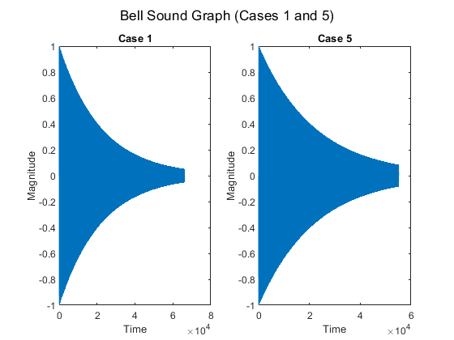
4.3c) -> Case 2
Same process. Notably, the f_i(t) that this one decays to appears to be higher than the one in case 1. The larger carrier and modulation frequencies make this bell sound higher pitched, corresponding to the larger asymptotic value.
fc = 220; fm = 440; Io = 5; tau = 2; dur = 6; fs = 11025; t = 0:(1/fs):dur; %duration 6 seconds at 11025Hz It = Io.*bellenv(tau,dur,fs); fi = fc - It.*fm.*sin(2*pi*fm.*t - pi/2) - (Io/tau).*exp(-t./tau).*cos(2*pi*fm.*t - pi/2); subplot(2,3,2); plot(t, fi); xlabel("Time"); ylabel("f_{i}(t)"); title("Case 2") ylim([-2800, 2800]) xlim([0, 6])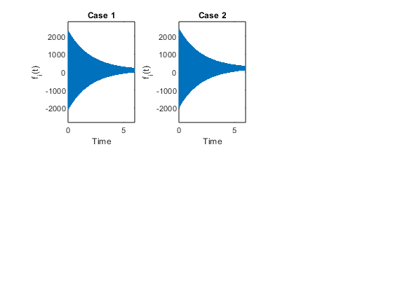
4.3c) -> Case 3
Same process. I(t) decreases much slower due to increased tau. This creates a sustained effect when heard
fc = 110; fm = 220; Io = 10; tau = 12; dur = 3; fs = 11025; t = 0:(1/fs):dur; %duration 6 seconds at 11025Hz It = Io.*bellenv(tau,dur,fs); fi = fc - It.*fm.*sin(2*pi*fm.*t - pi/2) - (Io/tau).*exp(-t./tau).*cos(2*pi*fm.*t - pi/2); subplot(2,3,3); plot(t, fi); xlabel("Time"); ylabel("f_{i}(t)"); title("Case 3") ylim([-2800, 2800]) xlim([0, 6]) xline(0)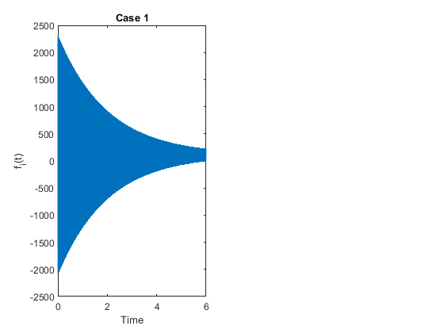
4.3c) -> Case 4
Same process. I(t) decreases much quicker due to reduced tau. This makes the sound drop off suddenly, which sounds like a percussive instrument.
fc = 110; fm = 220; Io = 10; tau = 0.3; dur = 3; fs = 11025; t = 0:(1/fs):dur; %duration 6 seconds at 11025Hz It = Io.*bellenv(tau,dur,fs); fi = fc - It.*fm.*sin(2*pi*fm.*t - pi/2) - (Io/tau).*exp(-t./tau).*cos(2*pi*fm.*t - pi/2); subplot(2,3,4); plot(t, fi); xlabel("Time"); ylabel("f_{i}(t)"); title("Case 4") ylim([-2800, 2800]) xlim([0, 6])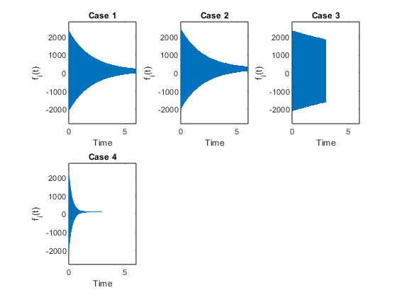
4.3c) -> Case 5
Case 1 and 5 behave very similarly, and its hard to determine a difference from the plot alone.
fc = 250; fm = 350; Io = 5; tau = 2; dur = 5; fs = 11025; t = 0:(1/fs):dur; %duration 6 seconds at 11025Hz It = Io.*bellenv(tau,dur,fs); fi = fc - It.*fm.*sin(2*pi*fm.*t - pi/2) - (Io/tau).*exp(-t./tau).*cos(2*pi*fm.*t - pi/2); subplot(2,3,5); plot(t, fi); xlabel("Time"); ylabel("f_{i}(t)"); title("Case 5") ylim([-2800, 2800]) xlim([0, 6])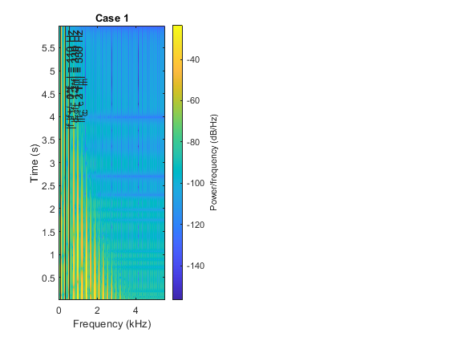
4.3c) -> Case 6
Case 5 and 6 also behave similarly, and it's hard to notice the effect of Io compared to tau when looking at the plot.
fc = 250; fm = 350; Io = 3; tau = 1; dur = 5; fs = 11025; t = 0:(1/fs):dur; %duration 6 seconds at 11025Hz It = Io.*bellenv(tau,dur,fs); fi = fc - It.*fm.*sin(2*pi*fm.*t - pi/2) - (Io/tau).*exp(-t./tau).*cos(2*pi*fm.*t - pi/2); subplot(2,3,6); plot(t, fi); xlabel("Time"); ylabel("f_{i}(t)"); title("Case 6") ylim([-2800, 2800]) xlim([0, 6]) sgtitle("Instantaneous Frequency vs Time (Cases 1-6)")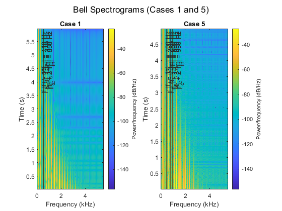
4.3d) - Visual Representation (Spectrograms)
4.3d) -> Case 1 Spectrogram
We already calculated the fundamental frequency (by the process given in the lab) to be 110, but from the spectrogram you can see that the frequencies are strongest at the start and fall off over time, just like the instantaneous frequency. See case 5 for comparisons
figure(4) % ASIDE: Wrestled with the spectrogram function, took a while to get a feel % for the time-frequency resolution uncertainty, but I found that a window % size of 400 does a decent job of showing the harmonic behavior over time, % while preserving the harmonic resolution. Note, to switch from samples % and normalized frequency, I needed to specify the sample rate. subplot(2,3,1); spectrogram(bell([110,220], 10, 2, 6, 11025), 400, [],[], fs); title("Case 1") % (Clean-ish) Harmonics! % Interestingly, harmonics seem to be driven by the magnitude of the % difference between the carrier frequency and positive and negative % integer multiples of the modulation frequency. % Extremely cool! xline(abs(110 - 1*220)/1000, '-', "|f_c - (+1)*f_m| = 110 Hz") xline(abs(110 + 0*220)/1000, '-', "|f_c - (0)*f_m| = 110 Hz") xline(abs(110 - 2*220)/1000, '-', "|f_c - (+2)*f_m| = 330 Hz") xline(abs(110 + 1*220)/1000, '-', "|f_c - (-1)*f_m| = 330 Hz") xline(abs(110 - 3*220)/1000, '-', "|f_c - (+3)*f_m| = 550 Hz") xline(abs(110 + 2*220)/1000, '-', "|f_c - (-2)*f_m| = 550 Hz")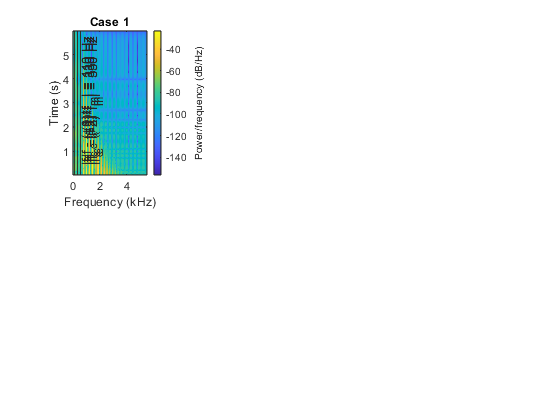
4.3d) -> Case 2
This plot has notably wider spaced harmonics, with a clear fundamental frequency f_0 at 220 Hz.
subplot(2,3,2); spectrogram(bell([220,440], 5, 2, 6, 11025), 400, [],[], fs);
title("Case 2")
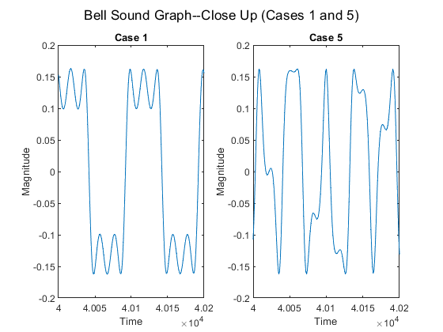 4.3d) -> Case 3
The higher-frequency harmonics of this case maintain their amplitude/power for much longer than case one, which is likely attributed to tau. Since the same frequencies are at play as those in case one, f_0 is also the same at 110 Hz.
subplot(2,3,3); spectrogram(bell([110, 220], 10, 12, 3, 11025), 400, [],[], fs); ylim([0,6]) % Added to normalize time evolution comparisons title("Case 3")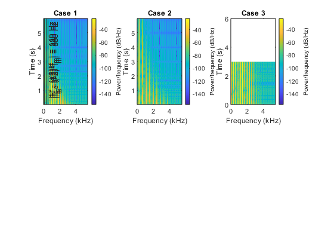
4.3d) -> Case 4
In this case, the higher-amplitude harmonics die off far more quickly than case one, also a result of tau. Since the same frequencies are at play as those in case one, f_0 is also the same at 110 Hz.
subplot(2,3,4); spectrogram(bell([110,220], 10, 0.3, 3, 11025), 400, [],[], fs); ylim([0,6]) % Added to normalize time evoltion comparisons title("Case 4")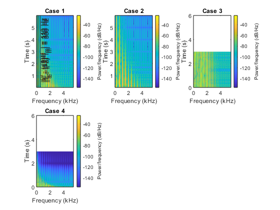
4.3d) -> Case 5 Spectrogram
We already calculated the fundamental frequency (by the process given in the lab) to be 50, but from the spectrogram you can see that it's stronger at the start and drops off slightly slower. However, you can see a lot more harmonic levels rippling out at the frequencies fm and fc. You can see that around the fundamental frequencies the tones are the strongest, which holds with our idea that it would "sound" right to compare the fundamental frequency to the overall sound. Note: we don't actually see a strong intensity band at our expected 50 Hz, following the gcd calculations. The strongest low frequency seems to arise from a relation f_c - f_m. Though whether the strong low frequency is technically the fundamental frequency is something I'm unsure of
subplot(2,3,5); spectrogram(bell([250,350], 5, 2, 5, 11025), 400, [], [], fs); ylim([0,6]) % Added to normalize time evoltion comparisons title("Case 5") xline(abs(250 - 1*350)/1000, '-', "|f_c - (+1)*f_m| = 100 Hz") xline(abs(250 + 0*350)/1000, '-', "|f_c - (0)*f_m| = 250 Hz") xline(abs(250 - 2*350)/1000, '-', "|f_c - (+2)*f| = 450 Hz") xline(abs(250 + 1*350)/1000, '-', "|f_c - (-1)*f_m| = 600 Hz") xline(abs(250 - 3*350)/1000, '-', "|f_c - (+3)*f_m| = 800 Hz") xline(abs(250 + 2*350)/1000, '-', "|f_c - (-2)*f_m| = 950 Hz")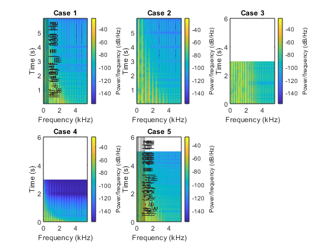
4.3d) -> Case 6 Spectrogram
One interesting point of note in cases 2, 5, and 6 with lower Io is that they seem to have less "banding" patterns throughout their intensity. The other cases seem to show a sort of family of quadratic/square-root-like curves connecting points of low intensity in the harmonic bands. I suspect this has to do with "ringing" phenomena dependent on Io. As before with case 5, the frequency components are the same, so they share the same low frequency, which is 100 Hz, not the 50 Hz we'd expect from the gcd()
subplot(2,3,6); spectrogram(bell([250,350], 3, 1, 5, 11025), 400, [],[], fs); ylim([0,6]) % Added to normalize time evoltion comparisons title("Case 6") sgtitle("Bell Spectrograms (Cases 1 through 6)")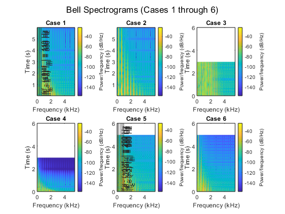
4.3e) - Signal/Envelope Comparison
4.3e) -> Case 1 through 6
This point is actually just a comparison of what we graphed in 4.1 and 4.2, so in the code we'll just refer to figures 1 and 2 to talk about this. For case 1, you can see in Figure 1 that the line represented there essentially covers the outer limit of the graph in figure 2. That tracks even just by the name, since an envelope is something that contains another piece of information/etc. The analysis here is essentially identical to case 1, just on another example. The envelope function in figure 1 represents the outer limit of the sound in figure 2. When zoomed in far, you can see that the bell sound is a strange combination of sinusoids, but that they're all contained within the envelope, which accurately represents the harmonics and other components contained in the bell sound beyond the fundamental frequency.
4.3f) - Signal Makeup
4.3f) -> Case 1
Here we will graph about 200 samples in the middle of the signal and discuss. I mentioned this slightly in 4.3e) Case 5, but we'll get to see this compared directly here. It's pretty easy to see that the fundamental frequency of this signal is one of the limits fc/fm, because all the oscillations are contained within another larger oscillation. This gives the result that it looks almost like a square wave with ripples all across the upper/lower limits.
figure(5); start_1_2 = 4*10^4; end_p_1_2 = start_1_2+200; start_3_4 = 1.5*10^4; end_p_3_4 = start_3_4+200; start_5_6 = 2.5*10^4; end_p_5_6 = start_5_6+200; subplot(2,3,1); plot(bell([110,220],10,2,6,11025)); title("Case 1"); xlabel("Time"); ylabel("Magnitude"); xlim([start_1_2,end_p_1_2])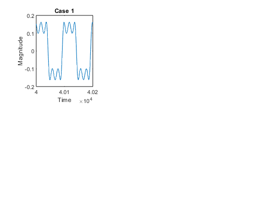
4.3f) -> Case 2
Here we see almost an exaggeration of case 1, with the very strong presence of the carrier wave as well as diminished oscillations at the peak from the modulation frequency that make the signal appear squar-ish with these limits
subplot(2,3,2); plot(bell([220,440],5,2,6,11025)); title("Case 2"); xlabel("Time"); ylabel("Magnitude"); xlim([start_1_2,end_p_1_2])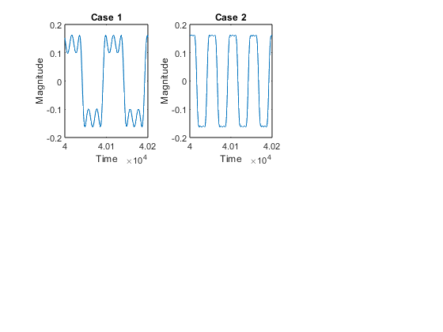
4.3f) -> Case 3
In Case 3, we see that we no longer have a sort of clean overlap between the frequencies. The fundamental frequency still shapes the overall distribution, but since the decay rate is so slow, at the moment in sampling these 200 points, the amplitude of the modulation frequency and its harmonics are still large.
subplot(2,3,3); plot(bell([110,220],10,12,3,11025)); title("Case 3"); xlabel("Time"); ylabel("Magnitude"); xlim([start_3_4,end_p_3_4])

4.3f) -> Case 4
Compared to Case 3, we see that we now have a very clean sinusoid at the carrier frequency whose amplitude is very small. This is due to the fast decay rate causing the modulation frequency and its harmonics to die out much quicker, along with the carrier frequency amplitude.
subplot(2,3,4); plot(bell([110,220],10,0.3,3,11025)); title("Case 4"); xlabel("Time"); ylabel("Magnitude"); xlim([start_3_4,end_p_3_4])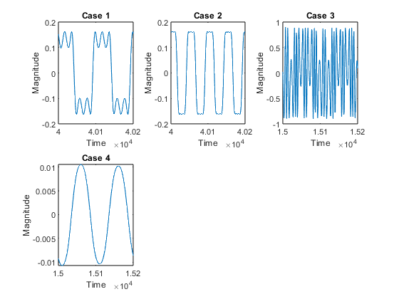
4.3f) -> Case 5
This is a case where you can clearly see that the fundamental frequency is not fc/fm, because unlike case 1, it doesn't contain the ripples within a larger oscillation, which leads to strange detours of the signal across the oscillation at unusal points. The higher frequency harmonics are still active at this sample, leading to the strange detours.
subplot(2,3,5); plot(bell([250, 350],5,2,5,11025)); title("Case 5"); xlabel("Time"); ylabel("Magnitude");xlim([start_5_6,end_p_5_6])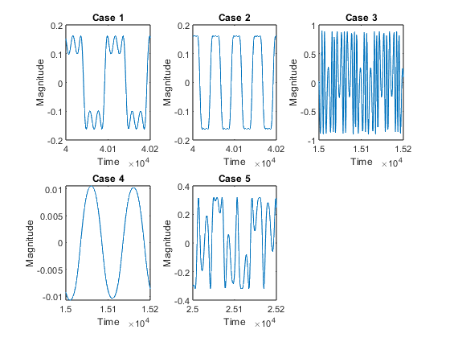
4.3f) -> Case 6
Here, we see that most of the high frequency components are beginning to die out, but are still shaping some of the amplitude of the carrier wave.
subplot(2,3,6); plot(bell([250, 350],3,1,5,11025)); title("Case 6"); xlabel("Time"); ylabel("Magnitude");xlim([start_5_6,end_p_5_6]) sgtitle("Bell Sound Graph--Close Up (Cases 1 through 6)")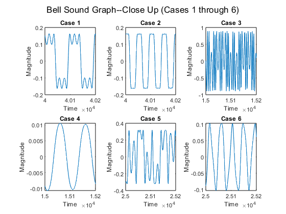
4.4) Comments about the bell
4.4) -> Different 1:2 ratios
Let's try looking at some different values for f_0 by changing f_c and f_m while keeping a 1:2 ratio.
% How about a low-frequency carrier in-between around 160 Hz, and a higher % frequency like 500 Hz?
4.4) -> f_c = 160 Hz, f_m = 320 Hz
First, f_c = 160 Hz, f_m = 320 Hz We'll keep the other parameters from case 1, for consistency This should give us a fundamental frequency of f_0 = gcd(160, 320) = 160 Hz
soundsc(bell([160, 320],10,2,6,11025)) pause(6) % It sounds like a simple pitch up of Case 1, nothing special. figure(6) spectrogram(bell([160, 320],10,2,6,11025),400,[],[],fs) % The spectrogram reveals that the lowest main frequency does seem centered % at 160, as expected.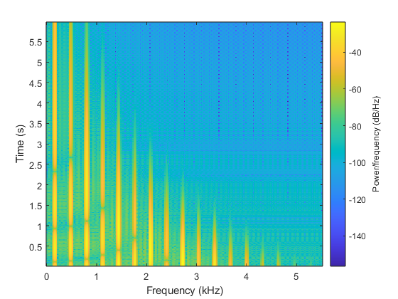
4.4) -> f_c = 500 Hz, f_m = 1000 Hz
Now f_c = 500 Hz, f_m = 1000 Hz Same other parameters as case 1 This gives us a fundamental frequency at f_0 = gcd(500, 1000) = 500 Hz
soundsc(bell([500, 1000],10,2,6,11025)) pause(6) % The sound has the same profile as Case 1, but it sounds very different. % There's a lot of erratic ringing and clipping sounds at the start, which % then fade into a more cohesive tone, so I suspect this is coming from % high-frequency components of the bell signal being aliased by our % sampling frequency. figure(7) spectrogram(bell([500, 1000],10,2,6,11025),400,[],[],fs) % Looking at the spectrogram, we see that there's a lot of green in between % those harmonics near the start of t=0, which could be aliasing, but it % might just be medium intensity between the harmonics. With aliasing, we'd % probably see more intense peaks wrapping back past a certain frequency.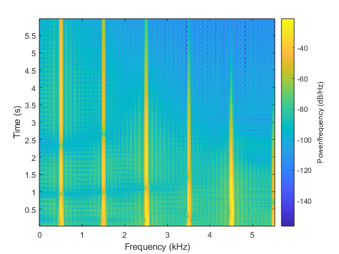
4.4) -> Non-1:2 ratios
4.4) -> f_0 = 40 Hz, ratio = 5:7
Let's figure out something with f_0 of 40 Hz that fits a 5:7 ratio 5*40 = 200 Hz 7*40 = 280 Hz gcd(200, 280) = 40 As always, we'll keep the other parameters of case 1
soundsc(bell([200, 280],10,2,6,11025)) pause(6) % This bell sounds both really high-pitched and low-pitched at the same % time. This may have to do with the harmonics being very close together. % The ringing is also very prevalent. figure(8) spectrogram(bell([200, 280],10,2,6,11025),400,[],[],fs) % Once more, we see that the lowest frequency is not at 40 Hz, like we % suspect, but rather |f_c - f_m|, which is 80 Hz in this case.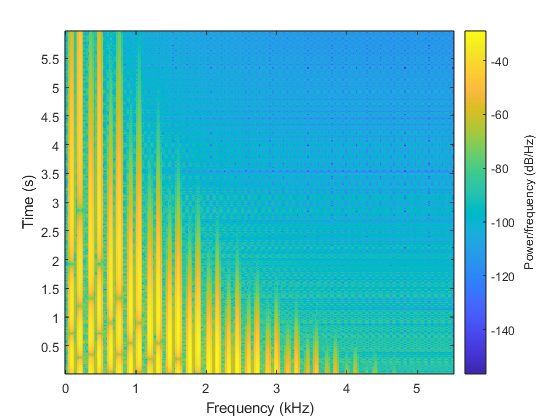
4.4) -> f_0 = 40 Hz, ratio = 3:4
How about a 3:4 ratio? 3*40 = 120 4*40 = 160 gcd(120,160) = 40 Given other case 1 parameters:
soundsc(bell([120,160],10,2,6,11025)) pause(6) % This has a very deep "artificial" sounding tone that grows toward what % could be considered a bell. The initial tone reminds me of sounds in some % arcade games such as Galaga, Space Invaders, and Asteroids. I like it! figure(9) spectrogram(bell([120,160],10,2,6,11025),400,[],[],fs) % Here we see the frequency band is clustered even more tightly due to the % lower frequencies and closer modulation frequency harmonics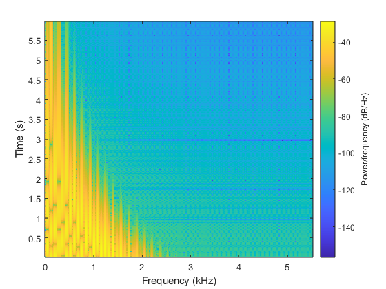
4.4) -> f_0 = 40 Hz, ratio = 4:3
What will happen when we flip the ratio of the carrier and modulation frequencies? 3*40 = 120 4*40 = 160 gcd(120,160) = 40 Given other case 1 parameters:
soundsc(bell([160,120],10,2,6,11025)) pause(6) % This feels very discordant, but it seemingly lacks the intensity of the % initial tone of the 3:4 ratio. It also feels "deeper" figure(10) spectrogram(bell([160,120],10,2,6,11025),400,[],[],fs) % Interestingly, the "banding" pattern of lower intensity/interference % between harmonics seems to be facing the other way on the spectrogram!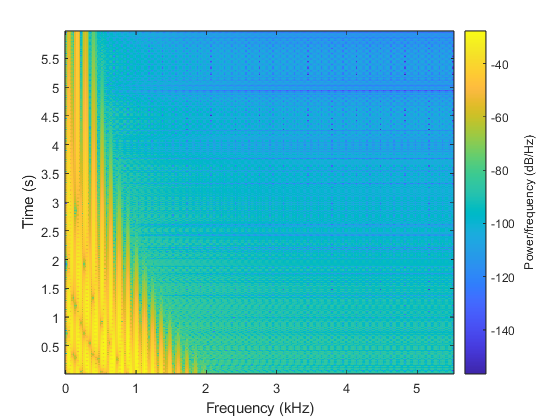